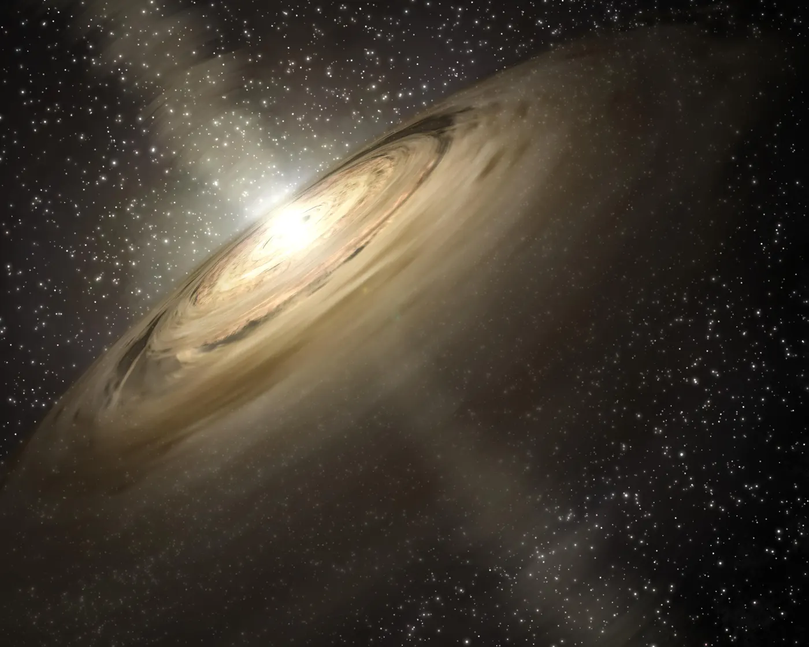
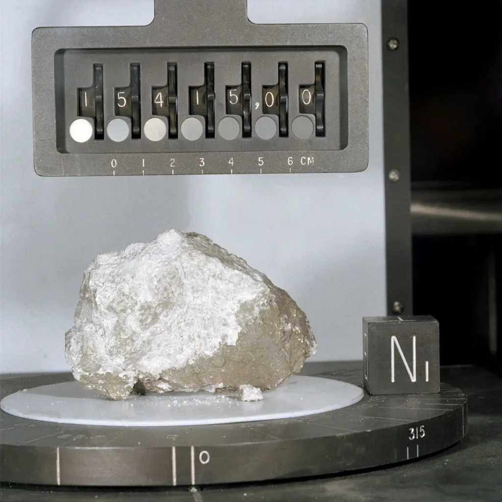
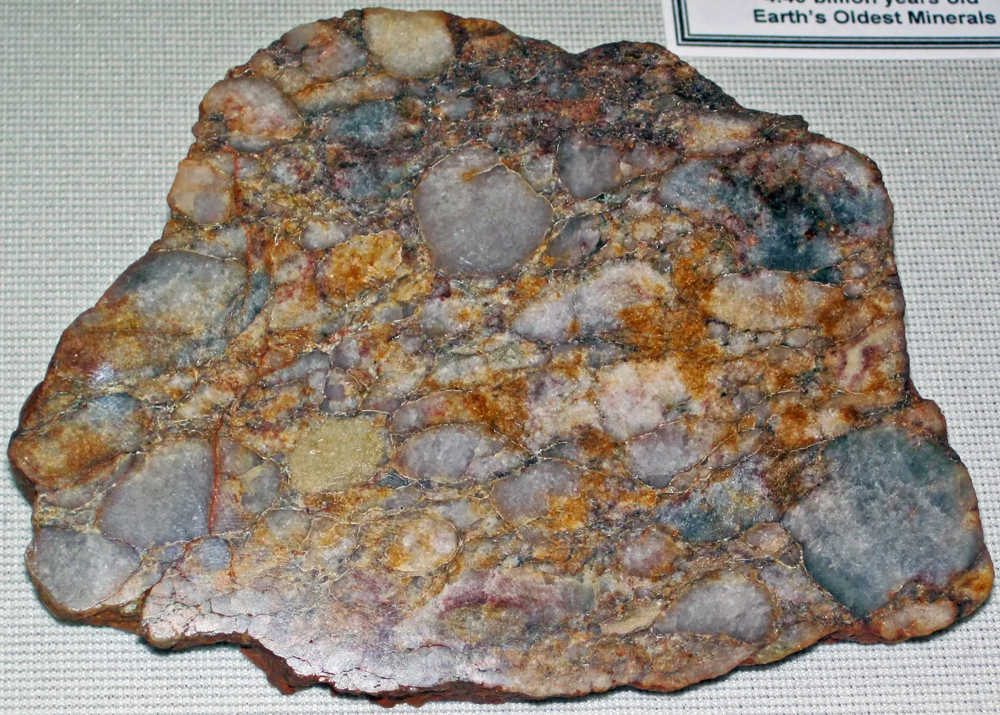
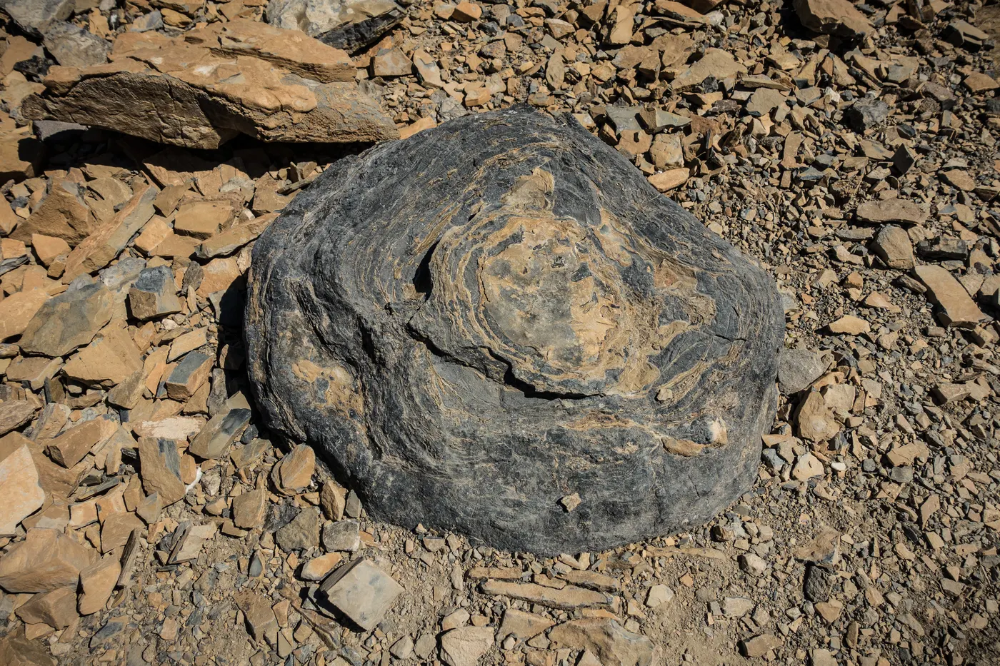
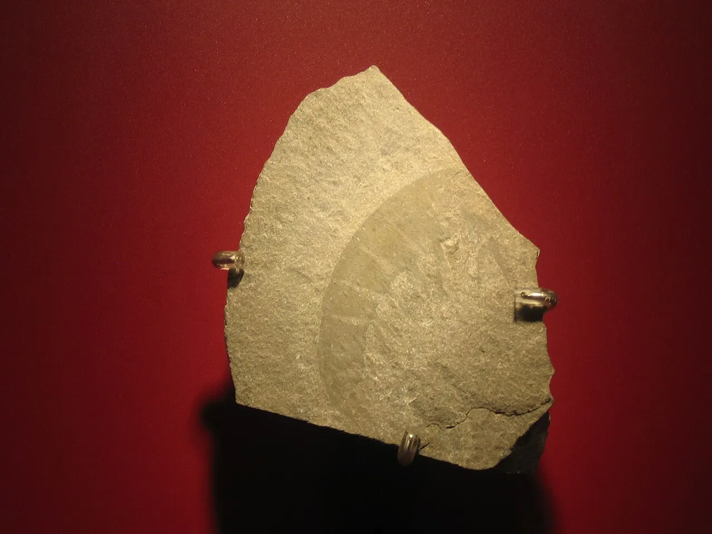
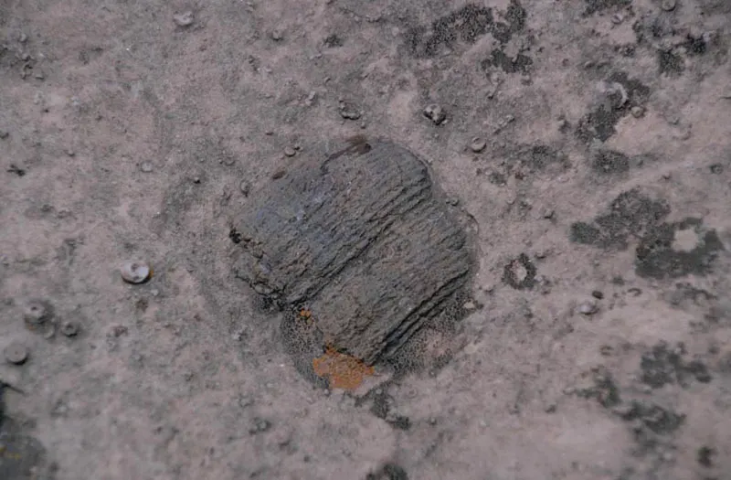
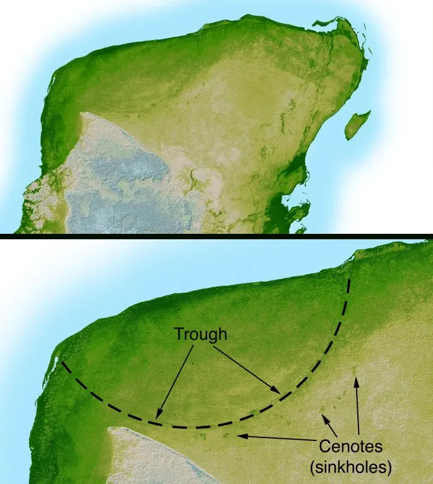
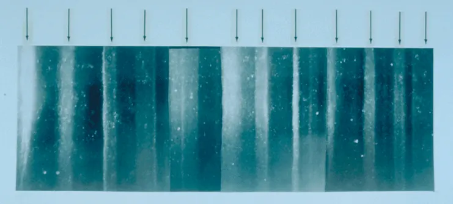

Dig Quest: la storia della Terra
Solleva ogni strato per andare da 4,54 miliardi di anni fa all’ultima era glaciale. Ogni fatto è citato.
Due puntine nel tempo profondo
Scorri da 540 milioni di anni fa a oggi. Una puntina è un sito fossile. L’altra è un luogo dove una soluzione di Saving Planets lavora adesso. Entrambe viaggiano con le loro placche. Lo sguardo resta fermo durante la deriva, come in homepage. Arrivati a oggi, il globo si ferma sull’America del Nord, con la Groenlandia e gli Stati Uniti in vista.
540 Ma
Milioni di anni fa. Oggi è a sinistra.
Coste e posizioni: Scotese, C.R. (2016) PALEOMAP PaleoAtlas, ricostruite con il GPlates Web Service (EarthByte / AuScope). Tessitura finale: NASA Blue Marble, pubblico dominio. Prima di 540 milioni di anni la homepage è un’interpretazione d’artista, non questo modello.
TODO machine-draft translation: quest copy below is English for review.
Tap a layer to dig in. Start at the very beginning and dig toward today.
0 of 8 layers uncovered

NASA/JPL-Caltech, public domain. File page

Dust and gas around the young Sun clumped into rocks, the rocks collided and merged, and Earth grew. Scientists date Earth to 4.54 billion years (less than 1% uncertainty) using lead isotopes and meteorites.
Sources:

NASA, public domain. File page

A Mars-size body called Theia likely struck young Earth. The debris formed the Moon. Apollo rocks show the Moon formed about 60 million years after the solar system began and was once covered by a magma ocean.
Sources:

James St. John, CC BY 2.0, via Wikimedia Commons. Resized for this page. File page
_2.jpg){kind=link}
A tiny zircon crystal from the Jack Hills of Western Australia is 4.404 billion years old — the oldest known piece of Earth. Its chemistry points to continental crust and liquid water very early on.
Sources:

Glacier National Park, National Park Service, public domain. File page
.jpg){kind=link}
Tiny ocean microbes, likely ancestors of cyanobacteria, made oxygen by photosynthesis. Around 2.4 billion years ago oxygen built up in the air — the Great Oxidation Event — paving the way for complex life.
Sources:

Esv, CC BY-SA 3.0, via Wikimedia Commons. ShareAlike: remixes keep the same license. Resized for this page. File page

The Burgess Shale in the Canadian Rockies preserves soft-bodied sea animals from the Cambrian, 508 million years ago, recording the rapid diversification of life called the “Cambrian Explosion.” Charles Walcott collected some 65,000 specimens there for the Smithsonian.
Sources:

National Park Service, public domain. File page

The end-Permian extinction was the largest in Earth’s history: about 96% of species were lost. Massive volcanic eruptions in Siberia released carbon dioxide, linked to warming and ocean acidification. Life took millions of years to recover — but it did.
Sources:

NASA/JPL-Caltech, public domain. Shuttle Radar Topography Mission. File page

An asteroid 10–20 km wide struck near today’s Yucatán, forming the Chicxulub crater. About 76% of species died out, including all dinosaurs except birds. Mammals then flourished.
Sources:

NOAA, public domain. File page

At the Last Glacial Maximum, about 20,000 years ago, ice sheets covered Canada and northern Europe and sea level was about 120 meters lower. Ice cores from Greenland and Antarctica record this climate history year by year.
Sources:
You reached today. Continue the story with solutions on Saving Planets →